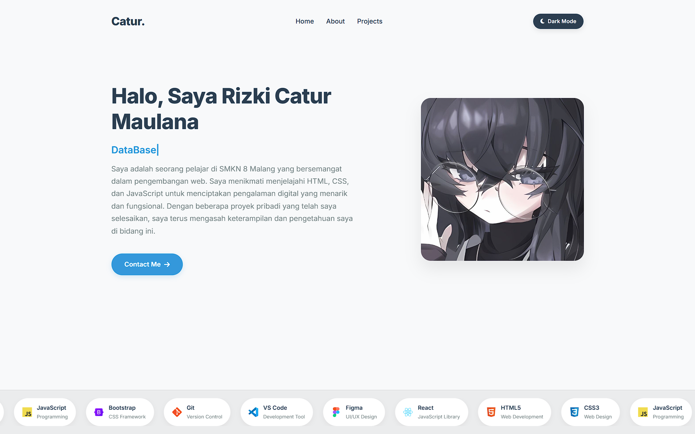

Web Development
HTML/CSS
Website Portofolio
Platform portofolio untuk menampilkan karya-karya saya.
Web Development
JavaScript
Dashboard IoT
Dashboard untuk visualisasi data IoT dengan grafik interaktif dan filter data real-time.
Python
Automation
Automation Tool
Script Python untuk mengotomatisasi tugas pengolahan data dan generating report.